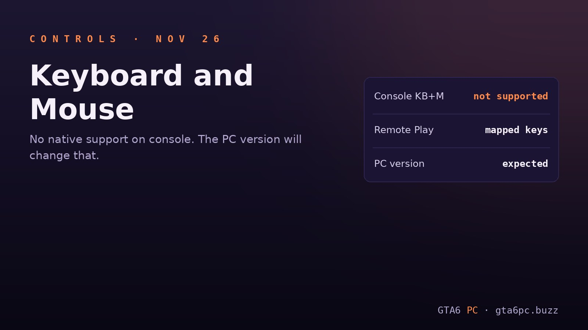

Will GTA 6 support keyboard and mouse on PC?
GTA 6 does not support a keyboard and mouse on console, and there is no PC version to support them yet. PC Gamer tested it on launch day and got no input at all once the game loaded. The only way to play with a keyboard and mouse on a PC today is to stream the game from your own console and map the keys to a virtual controller, and even then the mouse only imitates the right stick. The real PC version is a different story: every Rockstar PC port so far has shipped with full keyboard and mouse support, so the question is when it arrives, not whether it will have it.

The short answer
No, not on console, and not on PC either, because there is no PC version yet. GTA 6 launched on November 19, 2026 for PlayStation 5 and Xbox Series X|S only, and Rockstar has announced no native keyboard and mouse support on either console. If you plug a keyboard and mouse into your console, the game ignores them. If you want to play with a keyboard and mouse on a PC today, the only route is streaming the game from a console you own and mapping the keys to a virtual controller. That works, but the mouse does not aim like a PC mouse, because the game still thinks you are holding a pad.
The longer answer is better news. Rockstar has shipped keyboard and mouse support with every one of its PC ports, and GTA 5 on PC is the clearest example. So the question for PC players is not whether the PC version will support a keyboard and mouse. It is when the PC version arrives at all. Our GTA 6 PC release date page tracks that separately, and the honest state of it is that nothing is announced.
What happened when PC Gamer tried a mouse
The most direct test comes from PC Gamer's Dave James, who plugged a keyboard and mouse into an Xbox Series X on launch day, November 19, 2026. The keyboard worked in the console's menus, but once GTA 6 loaded there was no input at all. The game simply never reads keyboard or mouse input on console. A separate check of the settings menu found the tabs are Control Schemes, Controller, Gameplay, Display, Interface, Camera, Audio and Account, with nothing for a keyboard or mouse. A steering wheel base also failed on the PS5 version in the same round of testing.
One hands-on report is not the same as an official ruling, and a patch could change it. But as of November 26, 2026, no Rockstar statement promises keyboard and mouse support on PS5 or Xbox, and no second test has contradicted the first. Treat it as not supported until Rockstar says otherwise.
Why the console says no
The hardware is not the obstacle. Both consoles detect USB and Bluetooth keyboards and mice at the system level, which is why you can type in the dashboard with them. But on Xbox, keyboard and mouse support is decided per game: the developer has to add it. On PlayStation 5 the same rule applies, and Sony says game developers decide whether those accessories work inside their games.
More than 450 console games have added that support, including big open-world games such as Cyberpunk 2077 and Alan Wake 2, so it is a choice Rockstar made, not a limit of the machines. Rockstar also never added keyboard and mouse support to GTA 5 on consoles, so the pattern is consistent: on console, Rockstar builds for the controller and leaves it there. That is why the PC version matters so much to keyboard and mouse players, and why it is the only version that will ever offer real mouse aim.
How to play with a keyboard and mouse on a PC today
The workaround streams the picture from your console to your computer, then turns your keyboard and mouse into a virtual controller. The console still runs the game, so this is Remote Play, not a PC version, and our Remote Play guide covers the streaming setup in full. For the input side there are two routes that are documented and tested.
On PS5 the free route is chiaki-ng, an unofficial open-source Remote Play client, added to Steam so that Steam Input can map your keyboard and mouse to a virtual controller. On PS5 and Xbox the paid route is reWASD, a Windows tool that builds a virtual DualShock 4 or virtual Xbox controller from your keyboard and mouse, which the official Remote Play app then sees as a normal pad. reWASD Basic starts at 12.99 EUR with a 7-day trial, according to the developer website as checked on November 19, 2026. DS4Windows will not help here: it lets you use a PlayStation controller in PC games, but it does not turn a keyboard into a controller.
Expect two limits. First, the mouse imitates the controller's right stick, so aiming feels like a stick with a mouse attached to it, not like a PC shooter. Second, the game runs at 30 fps on console and the stream adds lag, so Sony recommends at least 15 Mbps for Remote Play. It is playable, and for some players it is the only way they will touch the game, but it is not the PC experience. Our Remote Play lag fixes cover the settings that help most.
Adapters are a worse idea
Devices such as XIM and Cronus Zen sit on the console's USB port and translate keyboard and mouse input into controller signals, so the game thinks a pad is connected. That is the same trick as the Remote Play mapping, done in hardware, and it works on the console itself rather than through a PC.
The risk is different. Other publishers, including EA and Activision, treat these adapters as cheating when they manipulate input, and Rockstar's online ban policy applies to GTA Online. Cronus scripts such as macros and anti-recoil are cheating, full stop. If you only play the story, an adapter is your own choice. If you play online, you are risking the account. The streaming route has no such ban risk, because nothing is plugged into the console.
What the real PC version will bring
Rockstar's own description of GTA 5 on PC lists support and extensive customization for mouse and keyboard controls, alongside plug-and-play controller support, first-person mode and keybindings you can change. Trusted Reviews called mouse and keyboard gameplay a definite plus in its GTA 5 PC review, and the PC version let players swap between mouse and keyboard for firefights and a controller for driving. Red Dead Redemption 2 followed the same pattern on PC.
That is why the PC version is the answer most keyboard and mouse players are waiting for, and why the workaround above is only a stopgap. A native PC build would give real mouse aim, remappable keys and the first-person mode that makes a mouse worth using. None of it is confirmed for GTA 6 specifically, because Rockstar has not announced the PC version at all. GamesBeat reported on October 13, 2026, citing four anonymous sources, that a PC release is planned for the first three months of 2027, but Rockstar has not commented, so treat that as a rumour.
Until Rockstar announces it, the honest summary is short. On console, it is controller or nothing. On PC today, it is a stream with a mapped mouse. On a real PC version, whenever it comes, keyboard and mouse support is about as safe a bet as Rockstar has ever offered.
Quick answers
Does GTA 6 support keyboard and mouse on PS5 or Xbox?
No. Rockstar has not announced native keyboard and mouse support on either console, and PC Gamer reported no input in the game after plugging a keyboard and mouse into an Xbox Series X on November 19, 2026. The keyboard worked in the console menus but not inside GTA 6, and the settings menu has no keyboard options.
Can I play GTA 6 with a keyboard and mouse on PC?
Only through a workaround. You stream the game from your own PS5 or Xbox to your PC with Remote Play, then use a mapping tool such as chiaki-ng with Steam Input or reWASD to turn your keyboard and mouse into a virtual controller. The mouse moves the camera by imitating the right stick, so it does not aim like a PC mouse.
Is chiaki-ng or reWASD free?
chiaki-ng is free and open source, and paired with Steam Input it is the free route on PS5. reWASD works on both PS5 and Xbox and its Basic plan starts at 12.99 EUR with a 7-day trial, according to the developer website as checked on November 19, 2026.
Will the GTA 6 PC version support keyboard and mouse?
Almost certainly, based on Rockstar's own history. GTA 5 on PC shipped with support and extensive customization for mouse and keyboard controls, and Red Dead Redemption 2 followed the same pattern. But Rockstar has not announced a PC version of GTA 6, so there is no date and no official confirmation yet.
Do XIM or Cronus Zen adapters work with GTA 6?
They translate keyboard and mouse input into controller signals, so the game thinks a pad is connected. That is a workaround, not support, and other publishers treat these adapters as cheating in online modes. Macros and anti-recoil scripts are cheating, and Rockstar's online ban policy applies to GTA Online.
Last updated . We update this page when Rockstar announces anything new.